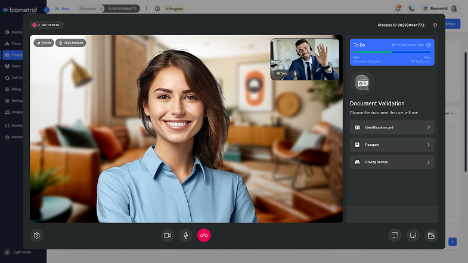
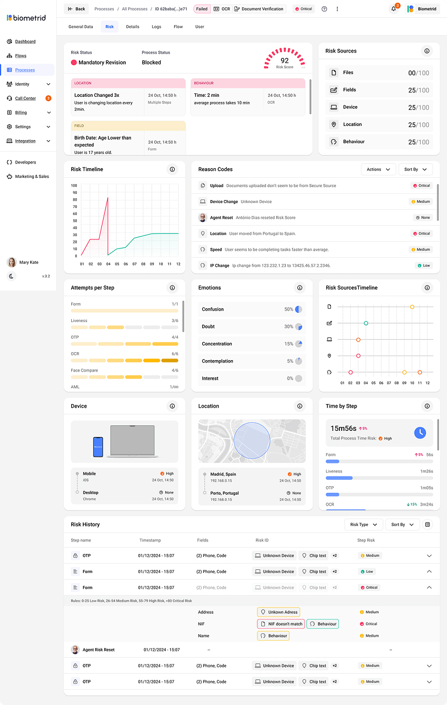

Biometrid is Portugal's market leader in AI-powered identity verification, covering 248 countries and 10,000+ document types, used by banks, fintechs, and management agencies. I designed both sides of the product: the user-facing verification flows and the operator tools that manage them, from automated biometric journeys to the call centre platform where human agents handle edge cases and identity disputes in real time.
Designed across the entire product ecosystem (user-facing verification flows, operator back office, and the human-in-the-loop call centre platform) demonstrating end-to-end product thinking across both consumer and enterprise surfaces. Featured in the Portugal Fintech Report 2023. Strategic partner to Proov (global biometric standards). Platform active across 248 countries, where every UX decision carries regulatory and commercial consequences.
- End-to-end KYC verification flow redesign, reducing the number of steps to completion while maintaining full regulatory compliance.
- Designed an automated video conference feature for real-time liveness detection and document validation, the platform's most trust-sensitive interaction, with no human on the other side.
- Improved the no-code flow builder enabling B2B clients to configure and brand their own verification journeys without engineering resource, directly supporting Biometrid's commercial scalability.
- Design modular contract data architecture so users could add, edit, or remove components independently without breaking the overall record structure.
- Designed the back office system used by Biometrid's internal teams and B2B client administrators; the operational layer that sits behind every verification flow.
- Created interfaces for managing verification cases, document review, and compliance audit trails, giving operators full visibility of the state of every identity in the system.
- Designed role-based access and dashboard views for different operator types: client admins configuring their own flows and compliance reviewers.
- Built product-wide design system spanning both the user-facing product and back office platform ensuring consistency, faster iteration, and brand flexibility for B2B clients.
- Designed a specialist call centre enabling agents to manage live video calls with users whose identity could not be verified automatically, handling edge cases, document disputes, and failed biometric checks.
- Agents needed to view, assess, and act on multiple simultaneous video verification sessions, requiring a queue management interface that surfaces priority cases, call status, and identity context in a single view.
- Designed for a high-pressure operational environment where agent speed and accuracy directly determines verification pass rates and client SLA compliance.
- The call centre layer bridges AI automation and human judgement, making it one of the most complex interaction design challenges in the product, with both operator UX and end-user trust at stake simultaneously.

